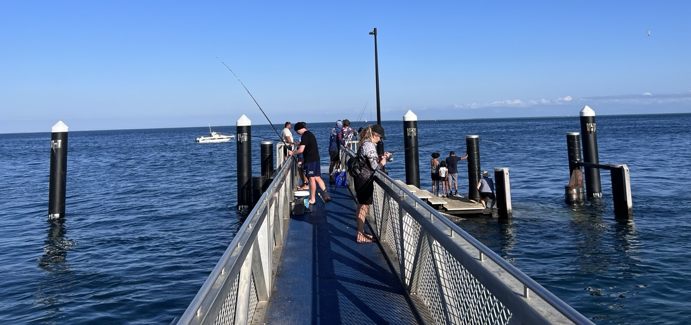

“I catch my own fish, so it’s sustainable” is a claim I often hear from recreational fishers. But is that really true?
Fishing selectively and at a small-scale does not guarantee that fishing will be sustainable. In fact, a lot of recreational fisheries are in bad shape.
Let me explain why and what you can do about it.

What does ‘sustainable fishing’ actually mean?
When we talk about sustainable fishing, we need to consider at least two different perspectives. First, there’s the species-level view: can the fish population you’re targeting persist through time at the current level of fishing pressure? If you’re removing fish faster than they can reproduce, the population will decline until it eventually collapses. This might happen slowly over decades or quickly within a few years, but the end result is the same.
But sustainability isn’t just about keeping fish populations above zero. Ideally our fisheries are sustainable AND productive. Productive means maintaining the population at a level where it can produce plenty of new fish. We want healthy, thriving populations that can support productive harvests indefinitely, not barely surviving populations with depressed catches.
The second perspective is ecosystem-level sustainability. Every fishing method has impacts beyond the species you’re targeting. These ecosystem effects come through several pathways, but the most obvious is bycatch - the fish and other animals you catch accidentally while trying to catch something else.
The ecosystem impacts of recreational fishing are often small
I think when people say their recreational fishing is ‘sustainable’ they are thinking about small-scale fishing methods that are pretty focused on catching just a few species, like hook and line. Then they are comparing these methods with industrial scale methods, like deep sea trawling which can catch tonnes of fish in a single haul and can have high bycatch rates.
Different fishing methods have dramatically different bycatch rates. If I’m hook-and-line fishing for myself, I might catch a few undersized fish or the occasional unwanted species, but most of what comes up is what I was trying to catch.
But if I’m using nets, even recreationally, my bycatch can be substantial. Nets don’t discriminate. They catch everything that swims into them, including undersized fish, protected species, even turtles, dolphins, or seals. While your fishing might be sustainable for the species you’re targeting, it can be devastating for everything else.
The handling of released fish matters too. When you catch something undersized or out of season and throw it back, that fish might not survive. Some species survive well if caught and released. Others don’t. Chinook salmon in British Columbia, for instance, often die after release if they’re not handled carefully. The difference between a skilled angler who keeps the fish in the water and uses proper release techniques versus someone who dumps it on the deck can be the difference between survival and death for the fish (see the end of this post for further tips on handling).
A lot of recreational fishers catching and releasing fish that die can add up to a big issue for the fish population.
The death by a thousand cuts problem
Here’s where the “I only catch a few fish” argument breaks down. Your individual impact might seem negligible, but you’re not fishing alone. Thousands of other recreational fishers are targeting the same species. Collectively, recreational fishing pressure can match or even exceed commercial fishing pressure for some species.
Catches of sand flathead, a popular species where I live, are close to 100% recreational. So its poor outlook is done to too much recreational fishing.
Too many people fishing creates what scientists call the “tragedy of the commons.” Each individual fisher acts rationally from their perspective - they only take what they need, they follow the rules, they don’t see their personal impact as significant. But when everyone acts this way simultaneously, the combined pressure becomes unsustainable.
This has happened to recreational fisheries in many places all over the world.
The sand flathead, for instance, was a staple when I was a child, but now its classified by government as overfished and its much harder to catch a decent sized one (about 1/100 fish is of legal size near to where I live!).
The management challenge
The large numbers of participants mean that recreational fisheries are inherently difficult to manage.
The best managed commercial fisheries typically have a relatively small number of participants whose livelihoods depend on maintaining the resource. They have strong incentives to support sustainable management, even when it means short-term sacrifices. This is certaintly not true of all commercial fisheries, but there are many examples of where commercial fisheries are managed sustainably.
Recreational fisheries, by contrast, typically involve large numbers of casually engaged users. Most recreational fishers don’t depend on fishing for income or food. This creates different incentives and makes collective action much harder.
The political scientist Eleanor Ostrom won a Nobel Prize for her work showing that sustainable resource management works best when resource users are actively involved in management decisions. Her research on forestry demonstrated that community collectives who co-manage resources with government agencies achieve better sustainability outcomes than top-down government management alone.
These ideas have been shown to also apply to fisheries.
Small fishing communities with strong social connections can develop and enforce sustainable practices through peer pressure, collective monitoring, and shared responsibility. But recreational fisheries often lack these social structures. Most recreational fishers don’t know many of their fellow anglers and don’t participate in management decisions.
They are likely to follow the rules government sets, but ultimately they mostly see resource stewardship as a government responsibility.
New rules have been brought in for Tasmania’s much loved flathead for instance. The rules were set by government based on the world-class fisheries science (by my colleagues).
The success of these rules at turning around the fate of the flathead now depends on how whether individual recreational fishers follow those rules of not.
Likewise, there are strict rules that limit fishing for Chinook salmon in Canada and require careful handling of accidentally caught salmon. Whether the Chinook can recover depends on whether people follow those rules.
What you can do as a recreational fisher
Ostrom’s work suggests that just following the rules as an individual isn’t enough. She showed that sustainability requires active participation by the community.
The first step as an individual is to learn and adopt best practices for whatever fishing method you use. Learn proper handling techniques for catch-and-release. Use gear that minimizes bycatch. Follow size and bag limits even when nobody’s watching. These individual actions matter, but they’re only part of the solution.
The next step is getting involved in the management of your fishery. Once you are educated you should be helping educate your peers as well.
The first time I was fishing in Canada, I had bought my fishing license and learnt the rules, but was otherwise a novice. But I very quickly realized the people on the shore around me knew even less.
I jumped in (in a friendly way) to help some young folks who were struggling to know how to handle their catch. It was an opportunity to show them proper handling techniques, how to identify and measure the fish they caught. Once it became apparent their catch was a keeper, I also helped them with preparation so they’d have high quality fillets (leaving a fish lying in the hot sun isn’t going to result in a good meal).
Educating peers, and a bit of peer pressure, was an important lesson from Ostrom’s work.
It is also important for recreational fishers to participate actively in management.
This could mean getting involved with scientific monitoring programs, attending public meetings about fishery management, and supporting sustainable management measures on when you post on social media.
Many regions have programs where recreational fishers can contribute to scientific data collection. You might return tagged fish, provide fish frames for scientific studies, or participate in catch surveys. These programs directly inform management decisions, but they only work if fishers participate.
You can also advocate for better management. Contact your local politician about supporting sustainable fisheries management. Support organizations that work on fishery conservation. Most importantly, help create a culture of stewardship within the recreational fishing community.
Taking responsibility
The assumption that recreational fishing is automatically sustainable because it’s small-scale and local doesn’t match ecological reality.
Sustainable recreational fishing requires the same elements as sustainable commercial fishing: good science, effective management, and responsible resource users. That might mean catching fewer fish in the short term. It definitely means getting more involved in management and stewardship.
The good news is that recreational fishers can be powerful advocates for conservation when they organize effectively. You have firsthand knowledge of local conditions, you spend time on the water that managers and scientists can’t match, and you have political influence as voters and taxpayers.
So next time someone tells you that recreational fishing is sustainable, ask them what they mean. Sustainability isn’t about the scale of your fishing or your motivations for doing it. It’s about whether your actions, combined with everyone else’s, maintain healthy fish populations and ecosystems over time. That requires active participation, not passive assumption.